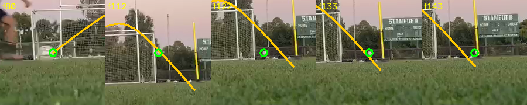

당신이 준 158초 훈련 영상에서 잘라낸, 굴러가는 공을 달려가서 차는 장면. 아래 영상과 숫자는 전부 이 클립에서 파이프라인이 실제로 산출한 것 — 데모 데이터가 아닙니다.
01The overlay
추적점(초록) + 물리 피팅 궤적(주황), 원본 위에 재투영

f80이 컨택 — 부츠가 공을 가리는 f81–88 구간을 흰-원반 확인(가림 양쪽에서 공이 원반으로 확인돼야 동일 개체로 인정)으로 건너뛰고, f91부터 비행을 다시 잡아 낙하까지 따라갑니다.
02The numbers
moving_ball진입 전략 — 정지공 없이
40관측 프레임
f80컨택 — 라벨과 정확히 일치
1.46 px손검증 궤적 대비 중앙값 오차
70–248km/h · 밴드 (아래 참조)
refusedpoint 속도
03밴드가 왜 이렇게 넓은가 — 그리고 그게 왜 옳은가
이 클립엔 미터 자가 없습니다프레임 속 골대는 규격 골대가 아니라 소형 연습 골대이고, 검출기는 후보를 찾았지만 이름을 대며 실격시켰습니다: crossbar_907px_is_5.9x_the_post_separation — "크로스바"라고 잡힌 선이 포스트 간격의 5.9배, 즉 크로스바가 아님. 포스트 길이도 251px vs 69px로 서로 다름. 자가 없으니 스케일은 약한 자(중력·공 지름)에 의지하고, 그 둘은 축방향 슛에서 24–35% 어긋납니다 — 그래서 밴드가 넓고, point는 거부.
며칠 전과의 비교같은 클립이 ① 크래시 → ② 자신 있는 오답 9.9–13.8 km/h (다리를 추적, 석양 하늘을 골대로 오인) → ③ 지금: 공을 정확히 추적하고, 컨택을 정확히 잡고, 스케일이 없음을 알고, 넓은 밴드를 정직하게 보고. 구장에서 규격 골대가 프레임에 들어오는 순간 이 넓은 밴드가 좁아지는 구조입니다 — 비스듬히 찍으면 ±3%까지.
시간 자도 한마디 했습니다이 파일은 컨테이너 레이트가 서로 불일치(재인코딩 흔적)라 point가 어차피 거부됩니다. 앱 안에서 찍으면 프레임별 실측 타임스탬프가 이 문제를 통째로 제거합니다.